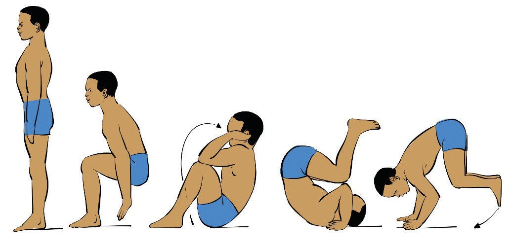

a b c d eFigure 4.2: Backward roll
Handstand
Handstand gymnastics refers to the skill of balancing the body in an inverted position, supported by the hands. It is a fundamental movement in gymnastics that requires strength, balance, flexibility, agility, coordination, and control. Handstands are used in various gymnastics disciplines, including artistic gymnastics, acrobatics, and tumbling. The following steps will help you practice the handstand:
Begin by kicking up against a wall for support and keep it for a while repeatedly;
Balance your body on the hands as you free your feet from the wall. To start with, you may have someone to help you stabilise;
Repeat it to improve balance;
After being stable, start it by putting feet together, arms raised overhead with core engaged;
Step one foot forward and lean placing your hands shoulder-width apart on the ground;
Swing your back leg up first, followed by the other leg, use momentum, but stay controlled;
As your legs are high up, keep your body tight and straight squeezing your core, glutes and legs to stay balanced, Figure 4.3; and
If you feel like falling forward, tuck and roll out, if falling back, return one leg down first to land safely.